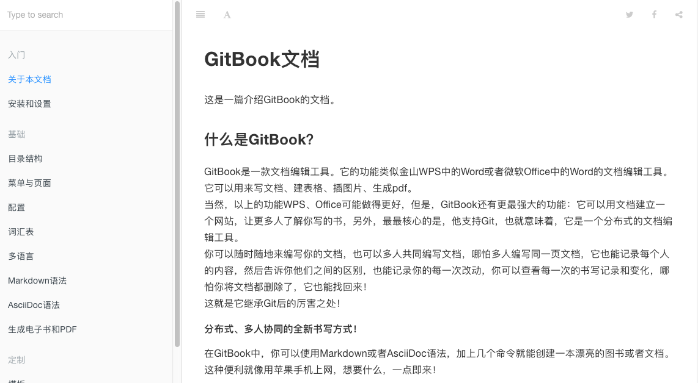

一个先进可定制的文档格式工具
特性 · 主页 · 示例 · 编辑 · 文档 · 提交贡献! · Twitter



GitBook是一款文档编辑工具。它的功能类似金山WPS中的Word或者微软Office中的Word的文档编辑工具。它可以用来写文档、建表格、插图片、生成pdf。 当然，以上的功能WPS、Office可能做得更好，但是，GitBook还有更最强大的功能：它可以用文档建立一个网站，让更多人了解你写的书，另外，最最核心的是，他支持Git，也就意味着，它是一个分布式的文档编辑工具。 你可以随时随地来编写你的文档，也可以多人共同编写文档，哪怕多人编写同一页文档，它也能记录每个人的内容，然后告诉你他们之间的区别，也能记录你的每一次改动，你可以查看每一次的书写记录和变化，哪怕你将文档都删除了，它也能找回来！ 这就是它继承Git后的厉害之处！
分布式、多人协同的全新书写方式！
在GitBook中，你可以使用Markdown或者AsciiDoc语法，加上几个命令就能创建一本漂亮的图书。这种便利就像Node.js一样。GitBook支持GitHub或者git来管理文章的改动和版本。你可以参考这个例子：ReduxJS documentation Or WebMagic Java爬虫文档.
你可以在自己电脑上使用GitBook来写一本书，也可以通过 GitBook.com 线方式写一本书。 还可以在自己电脑上安装桌面版的GitBook编辑器.
你可以加入 GitBook社区也可以在推特账号@GitBookIO 或脸谱账号GitBook 中获取我们的最新进展或者留言。
完整的中文文档在gitbook.hushuang.me上.
开始
使用GitBook，不需要联网就可以在您的计算机上创建本地书籍，也可以通过GitBook.com网站在线编辑你的书，不用担心电脑故障导致文章丢失，因为它就在云端。 想要试试，就开始看安装说明文档.
举个例子
GitBook可以用来写书，API文档、公共文档，企业手册，论文，研究报告等。 这里有一堆示例列表我相信总有一款适合你 。
帮助和支持
如果您在使用GitBook编写文档和书籍的时候，遇到问题，我们随时乐意帮助解决。 您可以在 联系地址上通过以下表单提出问题，或在GitHub问题列表中提出你的问题。
特性
发布你自己的书
你可以使用GitBook.com写一本关于自己的书，例如 "XXX自传"，可以设置成私人的或者公开的，写的过程中通过 git push 命令就更新到云端了。
授权许可
GitBook的授权许可使用的是Apache License, Version 2.0.